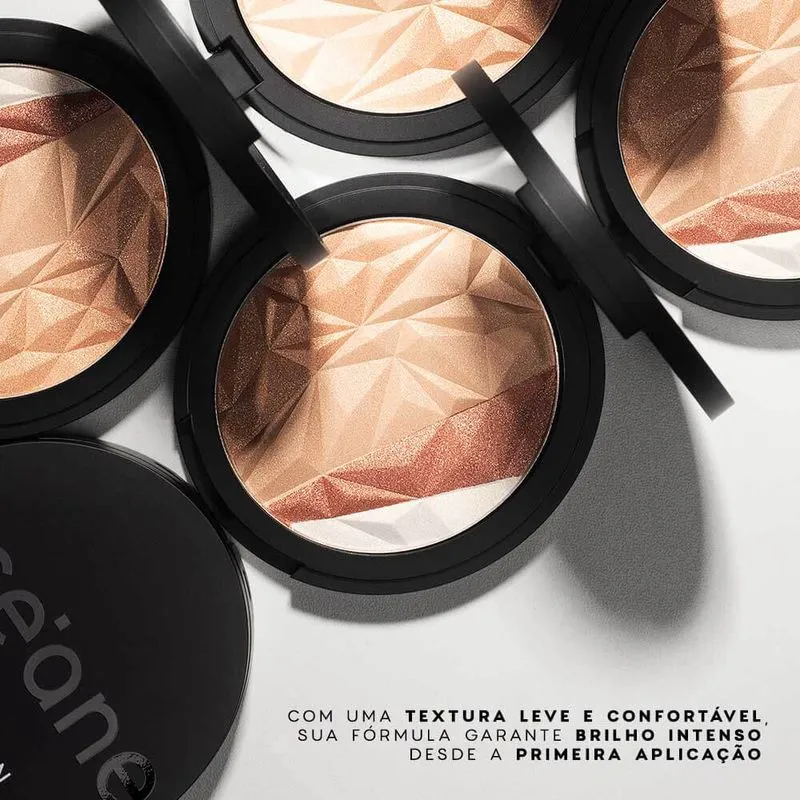
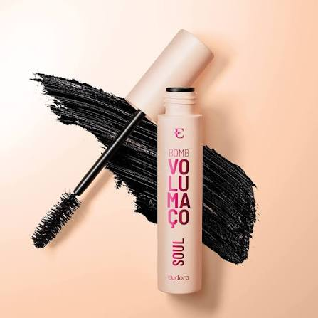
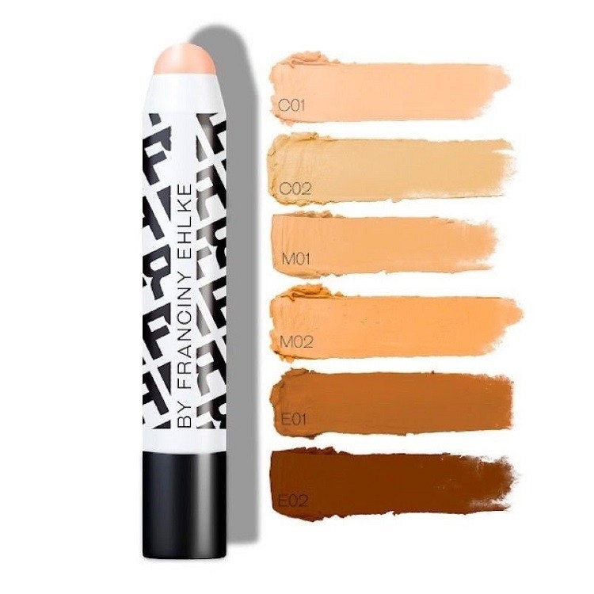
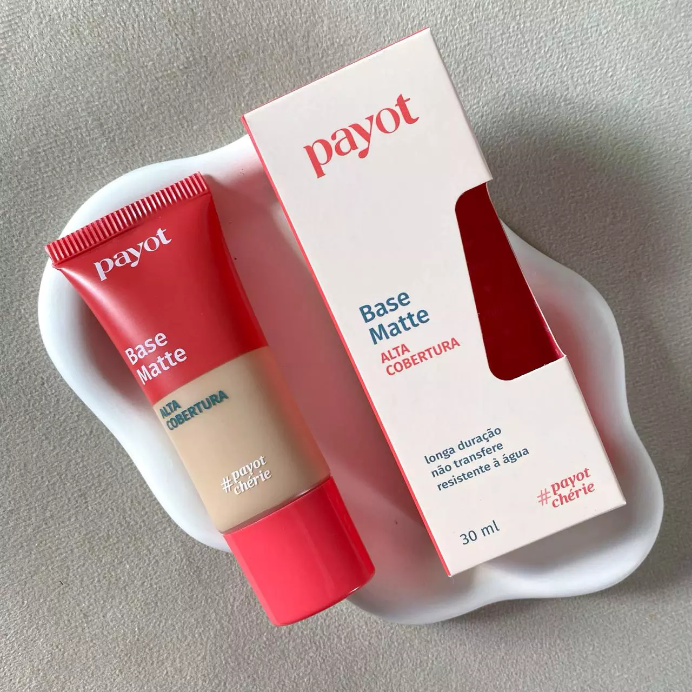
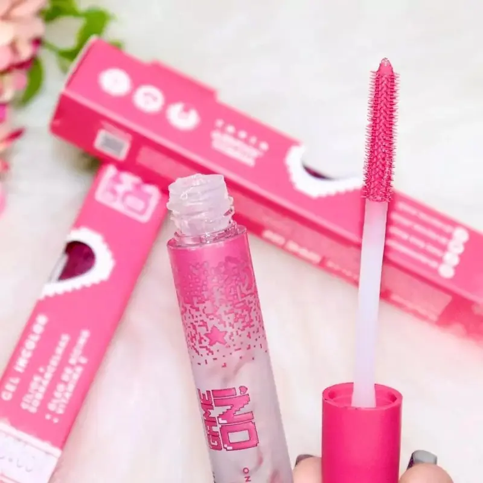
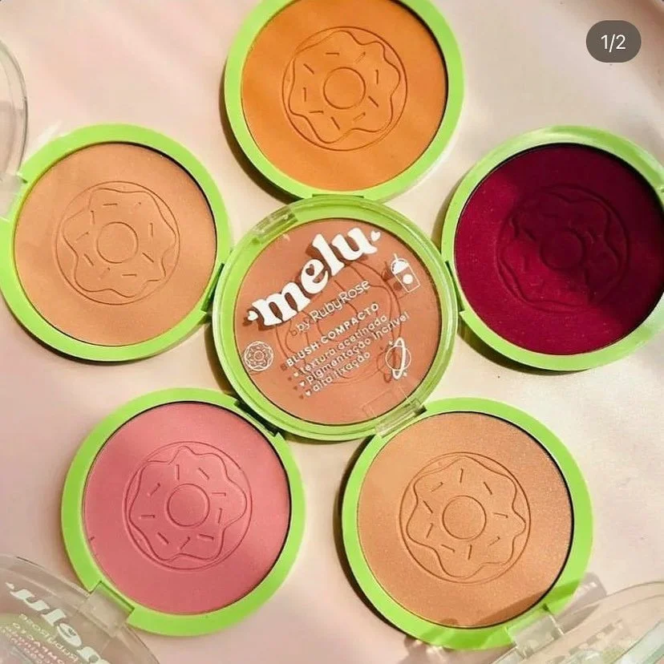
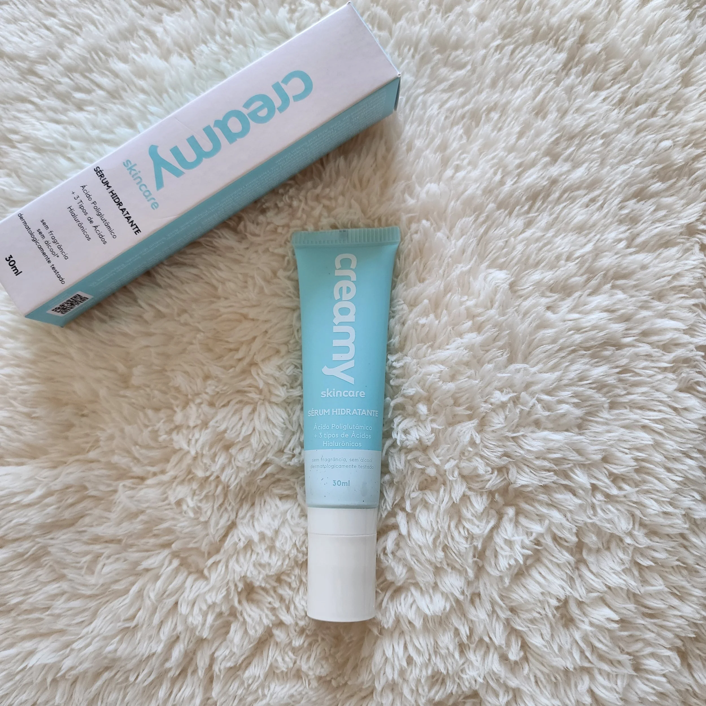
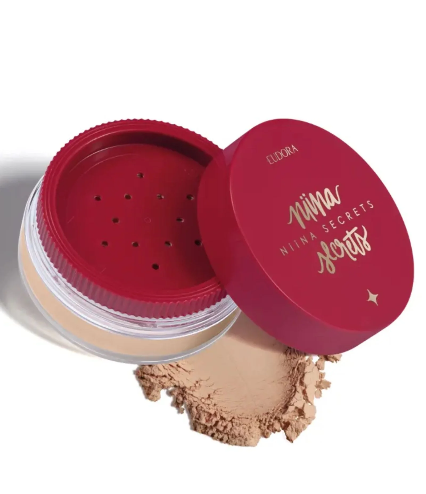

⭐ Avaliação
⭐ 4.8
Iluminador com brilho elegante e alta pigmentação, deixando a pele iluminada sem pesar na maquiagem. Possui textura macia, fácil aplicação e boa durabilidade.

⭐ Avaliação
⭐ 4.5
Máscara de cílios com ótima pigmentação, proporcionando volume, alongamento e definição aos fios. Possui boa durabilidade e aplicação fácil, deixando o olhar mais destacado.

⭐ Avaliação
⭐ 4.6
Corretivo com alta cobertura e textura cremosa, ajudando a disfarçar olheiras e manchas sem craquelar. É fácil de espalhar e deixa um acabamento natural na pele.

⭐ Avaliação
⭐ 4.9
Matte, cobertura média/alta, alta duração, permite construir camadas e cobrir imperfeições sem pesar. É bastante elogiada por quem tem pele oleosa.

⭐ Avaliação
⭐ 4.8
Gel incolor que ajuda a alinhar e fixar os fios das sobrancelhas ao longo do dia. Possui aplicação fácil, secagem rápida e efeito natural.

⭐ Avaliação
⭐ 4.9
Blush com boa pigmentação, fácil de espalhar e com efeito natural na pele. Possui boa durabilidade e cores bonitas para o dia a dia.

⭐ Avaliação
⭐ 4.7
Sérum com textura leve e rápida absorção que hidrata profundamente sem deixar a pele oleosa. Possui ácido hialurônico e outros ativos hidratantes que ajudam a deixar a pele macia e saudável.

⭐ Avaliação
⭐ 4.6
Pó solto ultrafino que ajuda a controlar a oleosidade e deixar a pele com acabamento natural e aveludado. Não pesa na maquiagem e tem boa duração ao longo do dia.